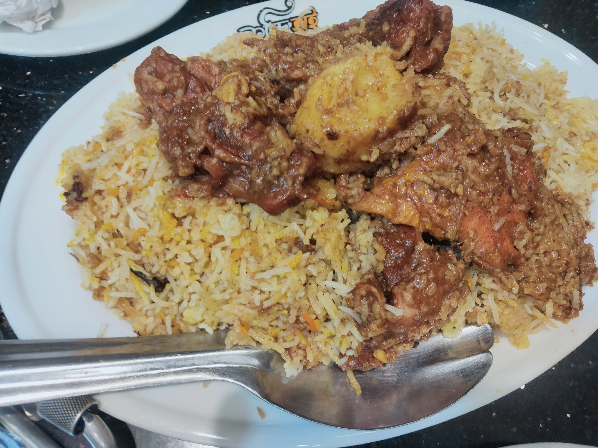
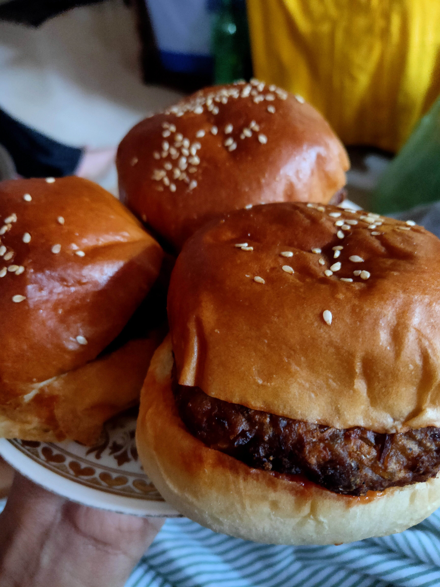

Embracing a life enriched by diverse interests, one finds fulfillment in three distinct pursuits. Traveling is a source of personal growth, cultural exploration, and cherished memories. The joy of savoring a variety of cuisines fosters sensory delight and meaningful connections. Simultaneously, the dynamic realm of Information Technology offers opportunities for innovation, problem-solving, and professional advancement. These passions, individually and collectively, contribute to a rich and fulfilling life, encompassing the physical, sensory, and digital dimensions of existence.
My ultimate list of activities I would eagerly embrace.
Travelling
Traveling is a transformative adventure that goes beyond the mere act of visiting new places; it's a profound journey of self-discovery and cultural immersion. It offers an unparalleled education, teaching adaptability, patience, and creativity as one navigates unfamiliar territories. Travel nourishes the soul with moments of serenity in nature and wonder in the face of architectural marvels, creating cherished memories that last a lifetime. Beyond personal growth, it fosters connections, bridging divides among cultures and promoting empathy and tolerance. Traveling is an enriching odyssey, disrupting routines, inspiring curiosity, and reminding us of the vast, diverse world waiting to be explored and appreciated. It's a lifelong pursuit that leaves an indelible mark on the traveler's heart and soul, forging a deeper understanding of the human experience and the beauty of our planet."
Some Picture and Memory of My Travelling with My friends
Some of My videos
Dream Destination
A dream destination transcends the mere notion of travel; it embodies the essence of aspiration, beckoning travelers with the promise of profound experiences. For me, it encompasses three remarkable places, each representing a unique facet of my dreams.
Saudi Arabia
Firstly, Saudi Arabia emerges as the ultimate dream destination, not merely for its geographical grandeur but for its spiritual significance. Makkah and Madinah, the holy cities, hold a unique place in my heart, beckoning me to embark on the sacred journey of Hajj. The thought of standing in the presence of the Kaaba, circumambulating its majestic black cube, and experiencing the profound spiritual awakening that Hajj offers is a dream I cherish. It's a destination where faith and devotion converge, creating an indelible connection to the divine.
Kashmir
Secondly, Kashmir, often referred to as "Paradise on Earth," represents a dream of pure serenity and natural beauty. The lush valleys, serene lakes, and snow-capped peaks make it an enchanting destination for a leisurely tour. Exploring the picturesque landscapes, sailing on Dal Lake, and savoring the rich culture and cuisine of this region is a dream I hold dear. Kashmir is where nature's splendor and human artistry meet in perfect harmony.
UTS,Australia
Lastly, Australia, specifically the University of Technology Sydney (UTS), beckons as my dream destination for academic pursuit. Aiming for a Bachelor of Science in Information Technology with a specialization in Cybersecurity, UTS embodies the cutting edge of technology and innovation. The dream of studying in Australia's vibrant multicultural environment, while delving deep into the realms of cybersecurity, promises not only academic growth but also the adventure of a lifetime. It's a destination where knowledge and experience unite in a pursuit of excellence.
Food
I'm Morshalin, a passionate food lover hailing from the heart of Bangladesh. As you explore my world of flavors through this website, you'll soon discover that my love for food knows no bounds.
So far, my culinary journey has been an exploration of the rich and diverse tapestry of Bangladeshi cuisine. From the delectable biryanis of Dhaka to the mouthwatering street food of Chittagong, I've savored every delightful morsel my homeland has to offer. But now, it's time to set my sights on a grander adventure.
Some of My videos and Photos with Food


I've embarked on a mission to traverse the globe, one plate at a time. My ambition is to taste, savor, and celebrate the incredible variety of foods from every corner of the world. From the spicy street foods of Bangkok to the aromatic curries of India, from the delicate sushi of Japan to the hearty pastas of Italy – my palate longs for the diverse flavors that this planet has to offer.
This website serves as a chronicle of my gastronomic journey. Through photos, stories, and reviews, I aim to share my experiences, inspire your taste buds, and ignite your passion for global cuisine. Join me on this epicurean expedition, and together, let's explore the world, one dish at a time. Bon appétit!
Some of the Food I want to try
My Passion for Computer
Personal Statement: Pursuing Excellence in Cybersecurity and Software Entrepreneurship
I am a dedicated IT student with an unwavering ambition to make a significant impact on the tech industry and the economic landscape of South Asia. My academic journey has been centered around acquiring deep knowledge and expertise in Cybersecurity, and I am on the path to completing my BSc in this critical field. My long-term vision is to establish a software company that not only becomes the most revenue-generating in South Asia but also sets the standard for excellence in the global software export market.
My vision
Mastering Cybersecurity: I recognize that cybersecurity is at the heart of a safe and prosperous digital future. My dedication to mastering this field is driven by a strong belief in the importance of safeguarding critical digital assets and infrastructure. Through rigorous education, hands-on experience, and staying up-to-date with emerging threats, I aim to become a trusted expert in cybersecurity.
Building a World-Class Company: My entrepreneurial spirit is fueled by a desire to create a software company that excels not only in terms of revenue but, more importantly, in terms of innovation and quality. I envision a company that develops cutting-edge software solutions addressing global challenges, with a focus on cybersecurity as a core component.
Contributing to South Asia's Tech Ecosystem: South Asia has immense untapped potential in the tech industry. I am committed to playing a pivotal role in its growth by nurturing local talent, fostering innovation, and facilitating international collaborations. My goal is to lead by example, inspiring other aspiring entrepreneurs in the region.
Exporting Excellence: I aspire to position my company as a leader in software exports from Bangladesh, demonstrating the high caliber of software development and cybersecurity expertise that our region has to offer to the world. Exporting software globally will not only bring in substantial revenue but also enhance the reputation of South Asian tech companies on the international stage.
Six-Year Timeline: I understand that success on this scale requires time, dedication, and a clear roadmap. Over the next six years, I will focus on building a strong educational foundation, gaining industry experience, and fostering connections within the tech community. By year six, I aim to have my company firmly established as a powerhouse in the software industry.
In conclusion, my journey as an IT student with a vision for cybersecurity and software entrepreneurship is not just about personal ambition; it's about contributing to the progress of South Asia's tech ecosystem and making a positive impact on the global stage. With determination, continuous learning, and a commitment to excellence, I am confident that I can turn this vision into a reality and create a lasting legacy in the world of technology.


.jpg)